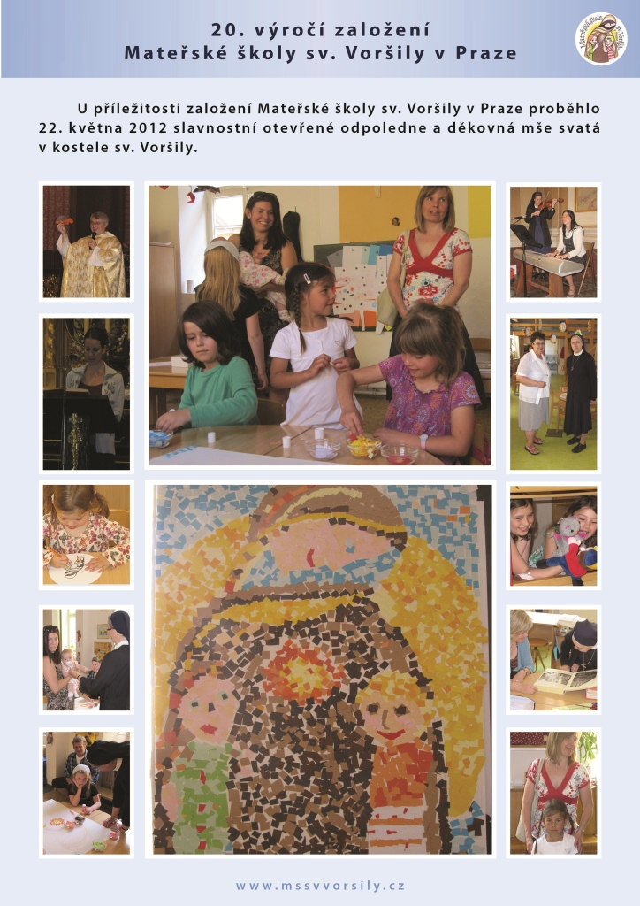

Zřizovatel: Českomoravská provincie Římské unie řádu sv. Voršily Ostrovní 11, 11000 Praha 1 - Nové Město Ursulines of the Roman Union | Mapa stránek | Kontakt | Aktiality
PŘEJEME VŠEM KRÁSNÉ PRÁZDNINY A TĚŠÍME SE VÁS OPĚT V PONDĚLÍ 3.ZÁŘÍ 2012.
U příležitosti založení Mateřské školy sv. Voršily v Praze proběhlo
22. května 2012 slavnostní otevřené odpoledne a děkovná mše svatá v kostele
sv. Voršily.

Období školního vyučování ve školním roce 2012/2013 začne v pondělí 3.9.2012 |
V případě, že docházka dětí v době prázdnin klesne pod 15% z celkového počtu zapsaných dětí, bude zajištěn provoz pro
naše děti v MŠ Hellichova 13 , Praha 1 a o hlavních prázdninách v CMŠ Srdíčko na Lužinách.
Sponzoři: